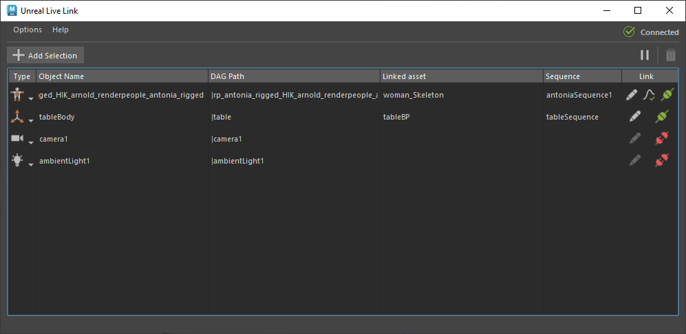

在 Unreal Live link 窗口中，可以创建和管理从 Maya 到 Unreal 的实时链接连接。您可以通过“文件 > Unreal Live Link”(File > Unreal Live Link)访问它。
当新更新可用时，Unreal Live Link 窗口底部会显示一条消息。单击链接以安装最新版本。
选择场景中的对象，然后单击此选项以将该对象添加到活动连接列表中。
显示当前通过实时链接连接到 Unreal 的对象的列表。此列表与场景文件一起保存。
显示所链接的对象的类型。当您第一次将对象添加到“连接列表”(Connection List)时，Maya 会根据其在选定层次中遇到的第一个 Unreal 兼容的节点类型自动设置此类型。但是，您可以通过从此下拉列表中选择其他选项来手动更改类型。
要发送到 Unreal 的对象的名称。可以更改此名称以匹配 Unreal 项目中的不同对象。
所链接的对象的 Maya 层次位置。
当前链接到对象的 Unreal 资产的位置。
在其中使用链接的资产的 Unreal 序列的位置。
当选定对象的“链接的资产”(Linked Asset)和“序列”(Sequence)具有值时，选择此项将打开“资产选择”(Asset Selection)窗口，以便修改链接信息。
显示对象的当前已烘焙曲线状态（绿色对勾 = 已烘焙，红色 = 未烘焙）。如果对象为“已链接”(Linked)，则此值指示如何在 Unreal 中表示融合变形和自定义属性的动画曲线。
设置为“已烘焙”(Baked)时，将先对融合变形和自定义属性的动画曲线进行烘焙（即在每个关键帧处对值进行采样），然后再将动画曲线流式传输到 Unreal。设置为“未烘焙”(Unbaked)时，将在 Unreal 中重新构造动画曲线，并尝试尽可能与 Maya 中的曲线匹配。如果使用已烘焙的曲线，则能够支持 Maya 中比较复杂的场景设置（包括对融合变形支持“封套”(Envelopes)和“分组”(Group)值），但代价是发送到 Unreal 的数据会增加。
请注意，此选项仅对角色主题可见。
显示对象的当前链接状态（绿色 = 已链接，红色 = 未链接）。如果选定对象的“链接的资产”(Linked Asset)和“序列”(Sequence)列为空，选择此项将打开“资产选择”(Asset Selection)窗口。否则，选择此项会将选定对象链接到当前链接的资产和序列或从其取消链接。
与“连接列表”(Connection List)中的其他列不同，链接不与场景文件一起保存。
暂时暂停在 Maya 和 Unreal 中的链接对象之间发送动画数据。使用此项可在编辑复杂动画数据时提高性能。暂停了链接时，此按钮将变为“播放”(Play)按钮，您可以单击该按钮以恢复链接并立即将所有编辑发送到 Unreal。
在“连接列表”(Connection list)中选择现有对象，然后单击此按钮将其移除。
选择“文件 > 选项”(File > Options)以打开“Unreal Live Link 选项”(Unreal Live Link options)窗口，其中包含以下选项。
启用此选项可将 Maya 的时间滑块与 Unreal 的播放指针同步。此关系是双向的。
使用此选项可将特定 Maya 实例指向特定 Unreal 实例（如果正在运行多个实例）。